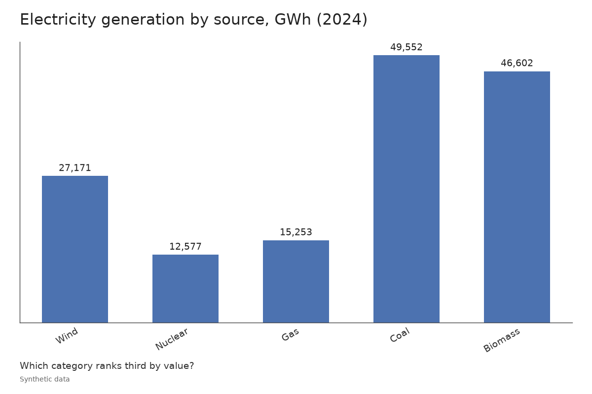
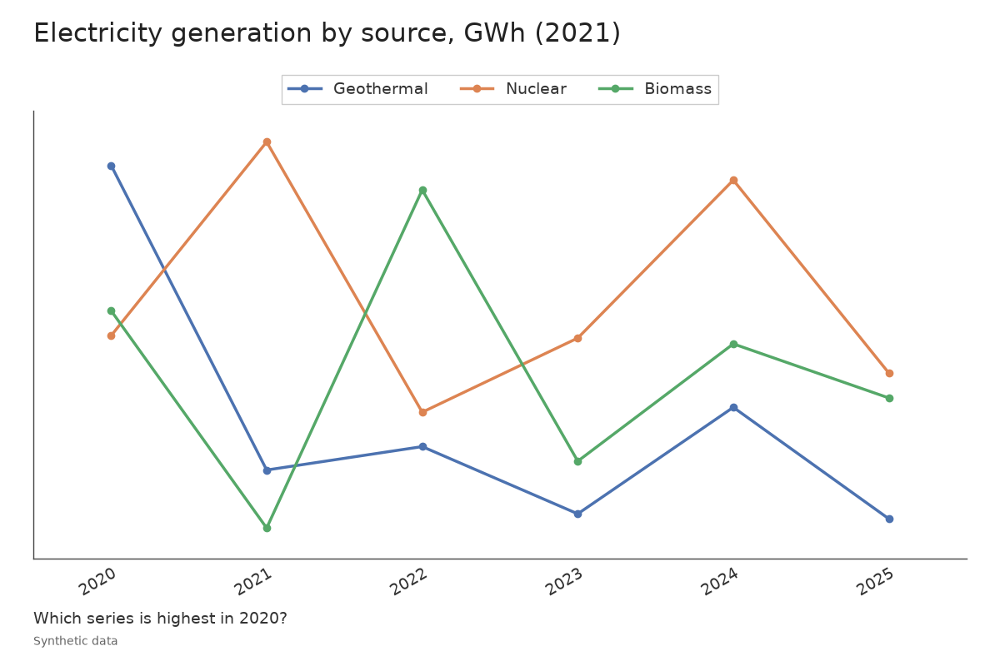

Synthetic chart and visual-reasoning benchmark (MVP)
Static report, generated from the run files. Service cost: 0.
1. Run and scope
This report summarises one pool run (its generated, checked and packaged tasks), the self-test of its checks, and one benchmark run on a frozen eval set. It is not a leaderboard, not a human-audited dataset, and not evidence about frontier models.
- Pool run id
- pool1
- Git sha
8f1c2d9ce7828bb5fd3c65fabbee787b4ae027e7- Config hash
825884142a21a28a0ce9cd9fe5a1d257529be12760656b6ab528f6fb2eb5815c- Service cost
- 0 (free tiers only)
- Benchmark run id
- none recorded; the benchmark is identified by its eval set SHA-256 in section 6
2. Pool funnel
| Stage | Count |
|---|---|
| Generated | 565 |
| Passed every check | 564 |
| Rejected by a check | 1 |
| Near-duplicates removed before packaging (not counted in generated) | 6 |
| Yield (passed / generated) | 99.8% |
Skipped reasons: none.
Rejected packages:
bar-energy-000004-value_lookupfailed 6_counterfactual
3. Checks
| Check | Version | Passed | Failed |
|---|---|---|---|
| 1_schema | both families | 565 | 0 |
| 2_layout | both families | 565 | 0 |
| 3_ambiguity | bar version | 451 | 0 |
| 3_line_ambiguity | line version | 114 | 0 |
| 4_ocr | both families | 565 | 0 |
| 5_line_pixels | line version | 114 | 0 |
| 5_pixels | bar version | 451 | 0 |
| 6_counterfactual | bar version | 450 | 1 |
| 6_line_counterfactual | line version | 114 | 0 |
| 7_line_redraw | line version | 114 | 0 |
| 7_redraw | bar version | 451 | 0 |
Bar version: 3_ambiguity, 5_pixels, 6_counterfactual, 7_redraw. Line version: 3_line_ambiguity, 5_line_pixels, 6_line_counterfactual, 7_line_redraw. Both families: 1_schema, 2_layout, 4_ocr. A bar package runs the bar names, a line package runs the line names.
4. Variation
Targets are goals from the plan. The values shown are the ones this run produced.
| Metric | What it measures | Actual | MVP target | Status |
|---|---|---|---|---|
| Cell coverage | share of feasible family x domain x question-type cells with at least 5 valid tasks | 100.0% | >= 90% | met |
| Question-type balance | normalised Shannon entropy of the question types | 0.9968 | >= 0.9 | met |
| Structural difference | share of nearest-neighbour pairs (by pHash) differing in at least one structural knob | 98.5% | >= 95% | met |
| Near-duplicates removed | pHash distance <= 6 or identical rounded spec, removed before packaging | 6 | 0 left after the filter; count reported | count reported |
| Reasoning depth | reasoning-step bins holding at least 15% of the packages | 2 of 8 bins | >= 3 bins with at least 15% each | not met |
| Difficulty spread | widest gap in accuracy between question types, over the evaluated models | 17.5 points (gemini-3.5-flash-lite) | >= 20 points | not met |
Reasoning depth
| Reasoning steps | Packages | Share | Bar (scaled to the largest bin) |
|---|---|---|---|
| 1 | 119 | 21.1% | |
| 2 | 174 | 30.9% | |
| 3 | 60 | 10.6% | |
| 4 | 42 | 7.4% | |
| 5 | 51 | 9.0% | |
| 6 | 37 | 6.6% | |
| 7 | 36 | 6.4% | |
| 8 | 45 | 8.0% |
Histogram total: 564 packages. Each share is the bin's count divided by that total.
5. Self-test
Clean packages: 20 of 20 passed every check before any defect was injected. Only those packages were injected into.
Full checks run every check of the family, including the redraw check. Content only leaves the redraw check out. Both columns use the same injected copies.
Sample: 20 of 564 pool packages. Rule: 20 packages at positions i*564//20 (i = 0 to 19) of the name-sorted list of pool tasks.
| Defect class | What the defect does | Injected | Caught, full checks | Catch rate, full checks | Caught, content only | Catch rate, content only |
|---|---|---|---|---|---|---|
| wrong_answer | task.json names a different answer | 20 | 20 | 100.0% | 20 | 100.0% |
| hidden_label | a white box covers the printed text the answer depends on | 20 | 20 | 100.0% | 20 | 100.0% |
| forced_tie | the second-largest bar is raised to equal the largest | 16 | 16 | 100.0% | 16 | 100.0% |
| mismatched_bar | the shortest bar is painted white | 16 | 16 | 100.0% | 16 | 100.0% |
| absent_entity | the question names a category the chart does not have | 9 | 9 | 100.0% | 9 | 100.0% |
Every injected defect was caught by the full checks.
6. Benchmark
Eval set
- Eval set SHA-256
abdef5e38a54930176e7847a5416b659cbf5ca28720473236ff4899ed808218c- Items in the set
- 200
- items.jsonl on disk
- matches the recorded SHA-256
- Pool packages the set was drawn from
- 564
- Sampling seed
- 20261211
| Stratum (family/question type) | Available | Selected |
|---|---|---|
| bar/extremum | 120 | 40 |
| bar/pair_compare | 120 | 40 |
| bar/rank_k | 91 | 40 |
| bar/value_lookup | 119 | 40 |
| line/series_at_x | 114 | 40 |
Models
| Model ID | Provider | Role | Accuracy (attempted items) | Correct / attempted | Not attempted | Stopped reason | Provider errors | Results dated |
|---|---|---|---|---|---|---|---|---|
| gemini-3.1-flash-lite | gemini | evaluated | 97.5% (95% CI 94.3 to 98.9) | 195 / 200 | 0 | none | 0 | |
| gemini-3.5-flash-lite | gemini | evaluated | 95.5% (95% CI 91.7 to 97.6) | 191 / 200 | 0 | none | 0 | |
| nvidia/nemotron-3.5-super-vl:free | openrouter | evaluated | 100.0% (95% CI 96.3 to 100.0) | 100 / 100 | 100 | rate_limited | 0 |
Accuracy is correct answers divided by items attempted; items not attempted are left out of both counts. Each accuracy is followed by its 95% Wilson score interval, computed from the same two counts. The results-date column is blank where a model's results file records no date.
gemini-3.1-flash-lite
Accuracy by family
| Family | Correct / attempted | Accuracy | Accuracy bar |
|---|---|---|---|
| bar | 156 / 160 | 97.5% (95% CI 93.8 to 99.0) | |
| line | 39 / 40 | 97.5% (95% CI 87.1 to 99.6) |
Accuracy by task type
| Task type | Correct / attempted | Accuracy | Accuracy bar |
|---|---|---|---|
| extremum | 40 / 40 | 100.0% (95% CI 91.2 to 100.0) | |
| pair_compare | 40 / 40 | 100.0% (95% CI 91.2 to 100.0) | |
| rank_k | 36 / 40 | 90.0% (95% CI 77.0 to 96.0) | |
| series_at_x | 39 / 40 | 97.5% (95% CI 87.1 to 99.6) | |
| value_lookup | 40 / 40 | 100.0% (95% CI 91.2 to 100.0) |
Error labels
| Error label (wrong answers only) | Count |
|---|---|
| empty | 0 |
| refusal_or_long | 0 |
| wrong_entity | 5 |
| wrong_value | 0 |
| other | 0 |
Difficulty spread across task types, over attempted items: 10.0 points.
gemini-3.5-flash-lite
Accuracy by family
| Family | Correct / attempted | Accuracy | Accuracy bar |
|---|---|---|---|
| bar | 153 / 160 | 95.6% (95% CI 91.3 to 97.9) | |
| line | 38 / 40 | 95.0% (95% CI 83.5 to 98.6) |
Accuracy by task type
| Task type | Correct / attempted | Accuracy | Accuracy bar |
|---|---|---|---|
| extremum | 40 / 40 | 100.0% (95% CI 91.2 to 100.0) | |
| pair_compare | 40 / 40 | 100.0% (95% CI 91.2 to 100.0) | |
| rank_k | 33 / 40 | 82.5% (95% CI 68.1 to 91.3) | |
| series_at_x | 38 / 40 | 95.0% (95% CI 83.5 to 98.6) | |
| value_lookup | 40 / 40 | 100.0% (95% CI 91.2 to 100.0) |
Error labels
| Error label (wrong answers only) | Count |
|---|---|
| empty | 0 |
| refusal_or_long | 0 |
| wrong_entity | 9 |
| wrong_value | 0 |
| other | 0 |
Difficulty spread across task types, over attempted items: 17.5 points.
nvidia/nemotron-3.5-super-vl:free
Accuracy by family
| Family | Correct / attempted | Accuracy | Accuracy bar |
|---|---|---|---|
| bar | 80 / 80 | 100.0% (95% CI 95.4 to 100.0) | |
| line | 20 / 20 | 100.0% (95% CI 83.9 to 100.0) |
Accuracy by task type
| Task type | Correct / attempted | Accuracy | Accuracy bar |
|---|---|---|---|
| extremum | 20 / 20 | 100.0% (95% CI 83.9 to 100.0) | |
| pair_compare | 20 / 20 | 100.0% (95% CI 83.9 to 100.0) | |
| rank_k | 20 / 20 | 100.0% (95% CI 83.9 to 100.0) | |
| series_at_x | 20 / 20 | 100.0% (95% CI 83.9 to 100.0) | |
| value_lookup | 20 / 20 | 100.0% (95% CI 83.9 to 100.0) |
Error labels
| Error label (wrong answers only) | Count |
|---|---|
| empty | 0 |
| refusal_or_long | 0 |
| wrong_entity | 0 |
| wrong_value | 0 |
| other | 0 |
Difficulty spread across task types, over attempted items: 0.0 points.
7. Examples
value_lookup, package bar-energy-000000-value_lookup
Question: What value is shown for Nuclear?
Answer: 12,577
Checks: 7 of 7 checks passed (1_schema, 2_layout, 3_ambiguity, 7_redraw, 4_ocr, 5_pixels, 6_counterfactual)
extremum, package bar-energy-000000-extremum
Question: Which category has the highest value?
Answer: Coal
Checks: 7 of 7 checks passed (1_schema, 2_layout, 3_ambiguity, 7_redraw, 4_ocr, 5_pixels, 6_counterfactual)

rank_k, package bar-energy-000000-rank_k
Question: Which category ranks third by value?
Answer: Wind
Checks: 7 of 7 checks passed (1_schema, 2_layout, 3_ambiguity, 7_redraw, 4_ocr, 5_pixels, 6_counterfactual)
pair_compare, package bar-energy-000000-pair_compare
Question: Which is higher, Nuclear or Coal?
Answer: Coal
Checks: 7 of 7 checks passed (1_schema, 2_layout, 3_ambiguity, 7_redraw, 4_ocr, 5_pixels, 6_counterfactual)

series_at_x, package line-energy-000000-series_at_x
Question: Which series is highest in 2020?
Answer: Geothermal
Checks: 7 of 7 checks passed (1_schema, 2_layout, 3_line_ambiguity, 4_ocr, 5_line_pixels, 6_line_counterfactual, 7_line_redraw)
8. Limits
- The benchmark is an easy set: the three free models score 95 to 100 percent, so it does not separate them.
- The free OpenRouter model is capped at 50 requests a day, so its run is partial.
- One pool task was rejected by the counterfactual check because the redrawn label layout confused the pixel reader.
- The human audit has not been done.
- The three models are the best free-tier multimodal models available on the build day, not frontier models.
- Floor plans are out of the MVP.